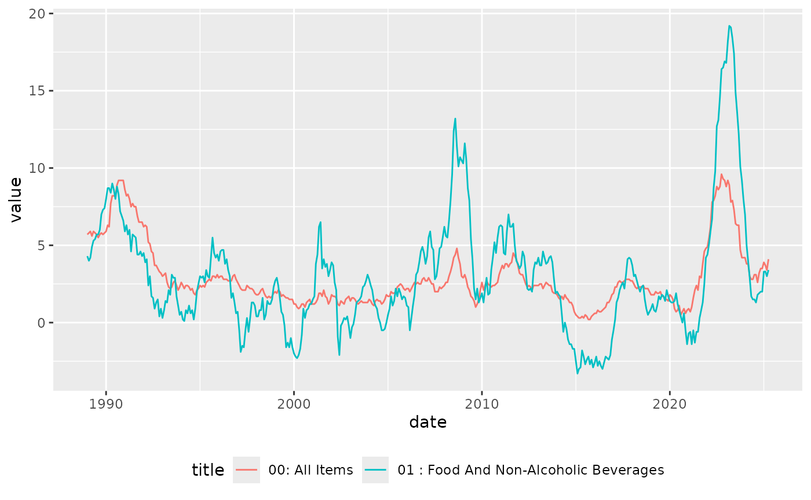

Get MM23 data
Download the latest MM23 from ONS. acquire_mm23() simply
downloads the full latest mm23.csv file, and returns its
location. By default it puts it into a temporary file, but you can
specify a folder where you want to put it.
library(mm23)
# Puts the data in a temporary file and returns its name
mm23 <- acquire_mm23()
#> Acquiring file1fe85c52dfaa
mm23
#> [1] "/tmp/RtmpNr63AX/file1fe85c52dfaa"
# Or specify a location
# mm23 <- acquire_mm23("~/data")
# data <- read.csv("~/data/mm23.csv")However, the raw mm23.csv file is not very
user-friendly. The key metadata is in the first few rows. Yearly,
quarterly and monthly series values are included in the csv file in the
same column. Its hard to unpick the data. There are thousands of series
all included in a single csv file.
Which is mainly where mm23 comes in.
Wrangling MM23 with mm23
Data
The get_mm23_* functions will return data in a tidy
format for a specific time frequency (yearly, quarterly or monthly).
Each series has a unique CDID identifier.
| date | cdid | value | period |
|---|---|---|---|
| 1947-06-01 | CDKO | 28.9 | M |
| 1947-07-01 | CDKO | 29.1 | M |
| 1947-07-01 | CDKP | 1.2 | M |
| 1947-07-01 | CZEQ | 0.7 | M |
| 1947-07-01 | CZFB | 0.8 | M |
| 1947-07-01 | CZFG | 0.0 | M |
Its more efficient to use acquire_mm23 first so as to
only download the data once. But if used without parameters the
get_mm23_* functions will download the latest data
automatically.
mm23 <- acquire_mm23()
m <- get_mm23_month(mm23)
q <- get_mm23_quarter(mm23)
y <- get_mm23_year(mm23)Metadata
Use get_mm23_metadata() to return details of what each
series CDID represents. Below is a random sample of its output. For some
series get_mm23_metadata() extracts the category of data
included and puts it in the category field. Equally, it
infers the COICOP digit level and adds that to the level
field.
mm23::get_mm23_metadata(mm23) |> dplyr::slice_sample(n = 5) |> knitr::kable()| cdid | title | category | level | pre_unit | unit | release_date | next_release | important_notes |
|---|---|---|---|---|---|---|---|---|
| DKC9 | CPI INDEX: Excluding energy & seasonal food (SP) 2015=100 | NA | NA | NA | Index, base year = 100 | 21-05-2025 | 18 June 2025 | NA |
| DOLV | RPI:Percentage points change over previous month(12 month rate)- Tobacco | NA | NA | NA | % | 21-05-2025 | 18 June 2025 | NA |
| L554 | 09.5.3/4 : Misc. Printed Matter, Stationery, Drawing Materials | CPIH Index | 4 | NA | Index, base year = 100 | 21-05-2025 | 18 June 2025 | NA |
| J48B | CPIHMONTHLYRATE 12.4.0.3Service to maintain people in their private home2015=100 | NA | NA | NA | NA | 21-05-2025 | 18 June 2025 | NA |
| CZDS | Other clothing | RPI Percentage change over 12 months | NA | NA | % | 21-05-2025 | 18 June 2025 | NA |
Joining data
You can join data and metadata by CDID, for analysis.
data <- get_mm23_month(mm23)
metadata <- get_mm23_metadata(mm23)
data |>
dplyr::filter(cdid %in% c("L55O", "L55P")) |>
dplyr::left_join(metadata) |>
dplyr::select(date, cdid, value, title, category) |>
head() |>
knitr::kable()| date | cdid | value | title | category |
|---|---|---|---|---|
| 1989-01-01 | L55O | 5.7 | 00: All Items | CPIH Annual rate (%) |
| 1989-01-01 | L55P | 4.3 | 01 : Food And Non-Alcoholic Beverages | CPIH Annual rate (%) |
| 1989-02-01 | L55O | 5.8 | 00: All Items | CPIH Annual rate (%) |
| 1989-02-01 | L55P | 4.0 | 01 : Food And Non-Alcoholic Beverages | CPIH Annual rate (%) |
| 1989-03-01 | L55O | 5.9 | 00: All Items | CPIH Annual rate (%) |
| 1989-03-01 | L55P | 4.2 | 01 : Food And Non-Alcoholic Beverages | CPIH Annual rate (%) |
data |>
dplyr::filter(cdid %in% c("L55O", "L55P")) |>
dplyr::left_join(metadata) |>
dplyr::select(date, cdid, value, title, category) |>
ggplot2::ggplot() +
ggplot2::geom_line(ggplot2::aes(x = date, y = value, colour = title)) +
ggplot2::theme(legend.position = "bottom")